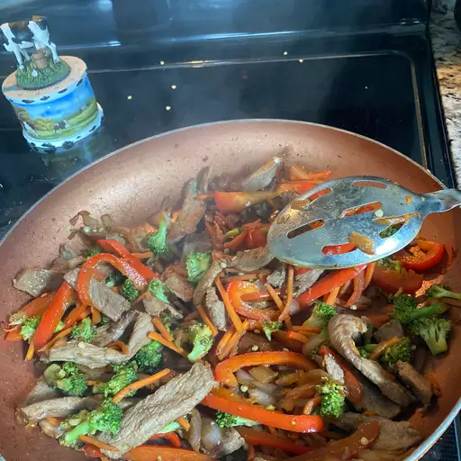

Quick Beef Stir Fry Recipe

Quick and easy beef stir-fry. I make this on my busiest weeknights.
Ingredients
- 2 tablespoons vegetable oil
- 1 pound beef sirloin, cut into 2-inch strips
- 1,5 cups fresh broccoli florets
- 1 red bell pepper, cut into matchsticks
- 2 carrots, thinly spaced
- 1 green onion, chopped
- 1 teaspoon minced garlic
- 2 tablespoons soy sauce
- 2 tablespoons sesame seeds, toasted
Directions